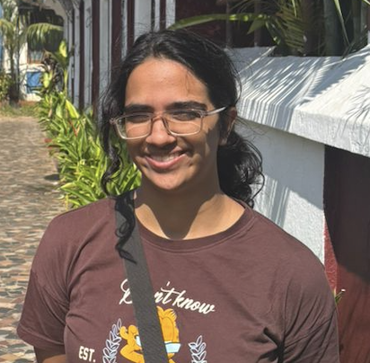
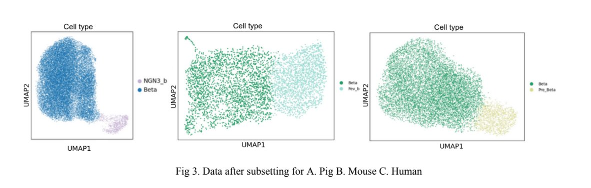
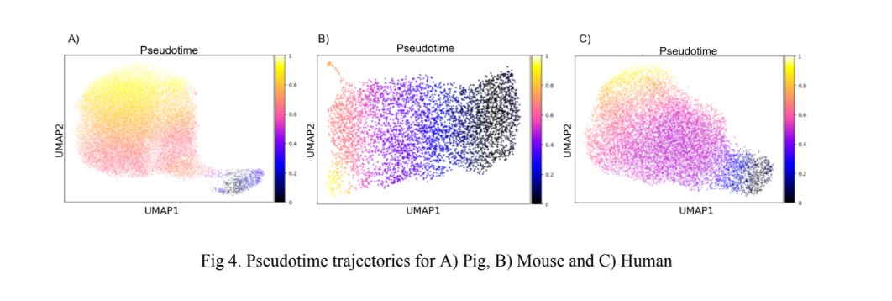

I'm a grad student at Carnegie Mellon studying Automated Science in the Computational Biology department. My work lives at the intersection of biology and computation: I've built closed-loop optimization systems for robotic pipetting, adapted protein language models to predict mutation effects, and trained deep learning models to read chest X-rays. Before CMU, I worked as a software engineer at Amazon and interned at research labs in Munich and Delhi.
I also love teaching and mentorship. At CMU, I've TA'd courses in programming, bioinformatics, and even a pre-college program where I helped high school students with hands-on lab work. Previously, I mentored students from underserved communities in data structures and algorithms through The Barabari Project and volunteered as a math and science teacher through NSS during my undergrad.
When I'm not debugging pipelines, you'll probably find me cooking, singing, or exploring a new city and its culture.

A few projects I'm most proud of, spanning ML, protein language modeling, genomics, software engineering, and scientific automation.
How do you teach a robot to pipette better by learning from its own mistakes? We built a closed-loop optimization pipeline that connects Bayesian Optimization with an OT-2 liquid-handling robot, using image-based feedback to iteratively improve dispensing accuracy. By gating optimization updates on YOLO prediction confidence, we reduced the effective search space to under 10%.
Can we predict how a single amino acid change will affect a protein's function? I built a mutation-level prediction pipeline using the pretrained protein language model ESM-2, with custom tokenization and masking-based training objectives, achieving roughly 70% accuracy on held-out data. In parallel, I'm designing hybrid architectures that combine transformers with state-space models (Mamba) to better capture long-range dependencies in protein sequences.


How do insulin-producing cells develop differently in humans, mice, and pigs? Using single-cell RNA sequencing data from 16 samples, I traced beta-cell trajectories during embryonic development and applied dynamic time warping to align them across species, revealing conserved and divergent patterns in pancreatic development.
Drug-resistant tuberculosis is hard to diagnose and deadly when missed. We trained CNN models including MobileNetV2 with U-Net segmentation on ~3,000 chest X-rays to distinguish multi-drug-resistant TB from drug-susceptible TB, reaching 87% accuracy and deploying the model as a web application.
My path has zigzagged between software engineering and research, and I think that's what makes it interesting.
Building mutation-level prediction pipelines with pretrained protein language models (ESM-2) and designing hybrid transformer/Mamba architectures for long-range protein sequence modeling.
Built a Java data pipeline handling SNS notifications and DynamoDB updates that cut storage costs by 40%. Designed a multilingual UI for a global trade platform, improving accessibility across English and Spanish.
Migrated a critical recovery plans workflow from BackboneJS to React 16 and built interactive formatters and event handlers for the Prism website.
Analyzed beta-cell trajectories across species using scRNA-seq data, applying dynamic time warping to align pseudotime trajectories in humans, mice, and pigs.
Optimized unsupervised ML algorithms (trVAE, scVI) to integrate genomic data from 140,000 cells. Ran 10+ experiments with varying species ratios to find the sweet spot for preserving biological signal while eliminating batch effects.
Built a multimedia API testing application for Samsung TV with a custom HTML/CSS/JS interface.
Core strengths in terracotta, bioinformatics tools in green.
I'm currently looking for opportunities in software engineering, computational biology, and ML research. Whether you're hiring, collaborating, or just want to chat about the intersection of biology and computation, I'd love to hear from you.